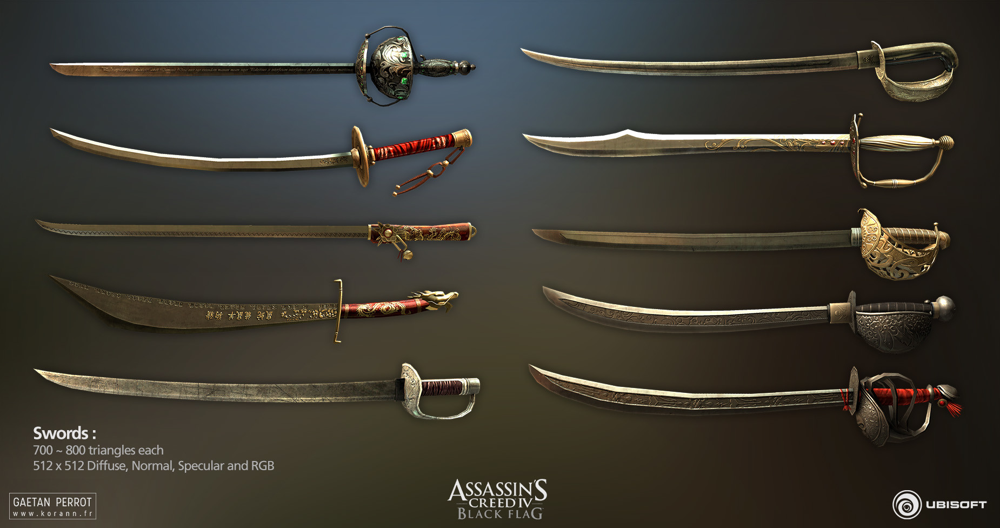

Para sobreviver aos perigos do Mar do Caribe, enfrentar guardas imperiais e caçar alvos da Ordem dos Templários, Edward Kenway conta com um vasto arsenal que mistura as tradicionais armas da Irmandade dos Assassinos com a brutalidade e o pragmatismo da pirataria do século XVIII.
1. Lâminas Ocultas (Hidden Blades)
Herança direta da Ordem dos Assassinos (obtidas após neutralizar o desertor Duncan Walpole), as lâminas ocultas são o símbolo máximo da Irmandade. Fixadas nos antebraços de Edward, permitem realizar assassinatos silenciosos e discretos tanto em alvos desatentos quanto durante saltos acrobáticos. Embora Edward as utilize inicialmente pelo valor prático ou por estética, com o tempo ele aprende a dominar o seu uso letal para eliminar comandantes e alvos prioritários sem alertar o resto dos guardas.
2. Espadas e Sabres
O combate corpo a corpo de Edward é altamente versátil, permitindo-lhe empunhar duas armas brancas simultaneamente (uma em cada mão). O jogador pode comprar ou desbloquear dezenas de tipos diferentes de espadas, sabres, cutelos e floretes nas lojas do jogo. Cada arma possui estatísticas próprias divididas em três atributos essenciais: Dano (a força de cada golpe), Velocidade (a agilidade nos combos) e Combo (a facilidade de encadear mortes consecutivas). As armas mais caras e poderosas do jogo podem ser obtidas completando contratos navais ou explorando armazéns secretos.

3. Pistolas de Pólvora e Coldres
As pistolas de pederneira são armas de fogo de curto/médio alcance extremamente letais, capazes de eliminar a maioria dos inimigos comuns com um único tiro certeiro. No início da aventura, Edward carrega apenas uma pistola, mas através de missões de caça marinha e terrestre é possível fabricar novos coldres que aumentam a capacidade para carregar até quatro pistolas simultaneamente. Disparar uma salva quádrupla seguida de perto cria um impacto devastador, excelente para derrubar capitães inimigos antes de iniciar um confronto direto.
4. Zarabatana e Dardos Especiais
Adquirida durante o treinamento com os Assassinos na ilha de Tulum, a zarabatana é a arma de longo alcance mais silenciosa do arsenal de Edward. Ela dispara dois tipos principais de dardos a partir de locais elevados ou arbustos:
Dardos de Fúria (Berserk): Injetam um veneno alucinógeno que faz com que o soldado inimigo perca a razão e ataque furiosamente os seus próprios aliados antes de colapsar.
Dardos de Dormir (Sleep): Adormecem instantaneamente qualquer guarda ou animal de médio porte, permitindo passar por zonas restritas sem gerar alarmes.
5. Ferramentas e Utensílios de Furtividade
Além do armamento ofensivo, Edward transporta um conjunto essencial de ferramentas de sobrevivência e distração:
Bomba de Fumaça: Essencial para escapar de situações de combate desfavoráveis, permitindo cegar temporariamente os inimigos para fugir ou realizar execuções furtivas.
Sineta de Alarme / Iscas: Usadas para atrair a atenção de guardas específicos para pontos cegos ou arbustos.
Cordas de Asfixia e Tiro com Arco: Usadas em contextos específicos de caça e missões guiadas para controle de alvos à distância.
.jpg)
.jpg)
.jpg)
.jpg)